CG Lounge: 映画・VFX業界のプロが教えるチュートリアル・マーケットプレイス
映画・VFX業界のプロがチュートリアルやアセットを直接販売するマーケットプレイス。

Houdini&Arnoldで描く大規模なフル3D自然景観「Island」制作解説
Spade&Co. 木川裕太氏による個人制作「Island」の技術解説記事。

Houdiniで学ぶプロシージャル環境制作: モデリングからレンダリングまで
Houdiniを用いたモデリングからレンダリングまでの背景制作ワークフローを体系的に学べるコース。

特定アセット入手サイトまとめ
車・人物など特定分野の3Dアセットが手に入るサイトのまとめ。Three D Scans（彫像スキャン）、Wire Wheels Club（車）、Render People（人物）の3サイトを掲載。

汎用素材サイトまとめ
テクスチャ・3Dモデル・HDRIなど汎用アセットを集めたサイトのまとめ。CGTrader、Turbosquid、Poliigon、Textures.com、Poly Haven、Free3D、Megascans（Fab）、Sketchfab、Artstation Marketplaceの計9サイトを掲載。

Kitbashアセットサイトまとめ
Kitbash用アセットが手に入るサイトのまとめ。BIG/MEDIUM/SMALL、Kitbash3D、Bulgarov（Falk Boje氏やWilliam Fiorentini氏も使用）、Forma 3D Store、Terraform Studios、Andrew Hodgsonの6サイトを掲載。

杉﨑亮太氏 — CG Forgeで紹介された自主制作の裏側と作品収集術
海外のCGアーティスト向けYouTubeチャンネル「CG Forge」で紹介された、杉﨑亮太氏の自主制作「Breath of the Ancient Earth」。制作プロセスのQ&Aと、普段の作品収集・リファレンス管理についてもnoteでまとめられている。

USD — 日本語の詳細なブログ記事・技術サイト
USDを理解するのにおすすめのブログ記事・技術サイト。BlenderのUSD/Hydra対応状況やアドオン開発など、USD関連の内容が詳しく解説されている。

Flares OFX — Nukeで使えるレンズフレアプラグインの使い方
レンズフレア用のOpenFXプラグイン「Flares OFX」をNukeで使う方法の解説。DaVinci Resolve、Fusion、Natronでも動作する。

ComfyUI-OCIO — ComfyUI拡張機能
ComfyUIの拡張機能「ComfyUI-OCIO」。

四维惰性氏 — 記事『岩・石のコンセプトとスカルプトアプローチ』
3D Environment Artistの四维惰性氏による記事「Rock and Stone Concept」。長年の経験に基づく岩のスカルプトアプローチを、シルエット・バランス・構図の観点から詳しく解説している。

Natsura — Houdini完結型の植生生成ツールキット
Houdini内でプロシージャルに植生を生成できるツールキット「Natsura」。インポート/エクスポートの手間がなく高品質で、いわば「SpeedTreeのHoudini完結版」だとしている。KTT（Gaea相当）同様、Houdini内で完結するツールが増えている傾向にも触れている。

Malte Resenberger-Loosmann氏 — 記事『観察の技法: Hero Assetの制作』
Malte Resenberger-Loosmann氏による記事「The Art of Observation: Mastering Hero Assets」。現実世界のリファレンスの観察・分析からマテリアルレイヤーの見極め、3Dへのディテール落とし込みまでのアプローチが述べられている。

Malte Resenberger-Loosmann氏 — マテリアル/レイヤー戦略に関する他の記事
Malte Resenberger-Loosmann氏のページにある他の記事。「Mastering Materials: Noise」「Breakdown Rust Material」「The 10 Layers Strategy」「Desert Eagle」など、マテリアル制作の知見がまとめられている。

The Adam — Blenderによる背景・アニメーション制作チュートリアル2本
Blender 4.4とHoudiniで西部劇風の列車アニメーションを作る30分の回と、Blender 4.3で街路の環境を作る47分の回。

【無料】Naughty Dog — Senior Environment Artistのウェブサイト、UEチュートリアル収録
Naughty DogのSenior Environment Artistによるウェブサイト。UEなどの無料チュートリアルが見られるほか、Gnomon Workshopでも2つのチュートリアルを公開している。

Blender — 便利ツール2種、Fast 2D Remesh Tool/Spline Mesh Tool
Blenderの便利なツール2種。「Fast 2D Remesh Tool」は地面生成やパス間の隙間埋めを目的とした高速2Dリメッシュツール、「Spline Mesh Tool」はスプラインに沿ってメッシュを変形させるツール。

Lei W.氏 — COPs活用のSci-fi Panel制作
SideFXでインターンをしているLei W.氏による、COPsを使ったSci-fi Panelの制作手法。Pythonでレイアウトをデザインし、COPsでHeightとディテールを追加、Houdini Engine経由でUEに渡し、Naniteでテッセレーション・ディスプレイスメントを実装するワークフロー。

LinkedInより — Triplanarのリアルタイム計算負荷について
リアルタイムレンダリングにおけるTriplanarマッピングの計算負荷（LinkedInの投稿を引用して紹介）。UV展開が不要で便利だが、サンプル数が3倍になる分のコストは単純比例せず、L1/L2キャッシュの挙動に左右されるという技術的な補足がある。

Port Town — Blenderによるセミプロシージャル環境制作ワークフロー
Blenderを用いてセミプロシージャルに制作された背景作品「Port Town」の制作手法を、動画クリップ付きで解説するブレイクダウン。

Triplanar — 負荷対策、面の向きに応じたPlanar/Biplanar使い分け
Triplanarの計算負荷への対応策として、面の向きに応じてplanar projection（地面など上向きの面）とbiplanar projection（建物など横向きの面）を選択的に使い分けるという手法。

Avatar Aangのコンセプトアート
『アバター 伝説の少年アン』をテーマにした複数の作品がArtStationで公開されていること。

Steffen Hampel氏 — 最新チュートリアル『Gotham - Full CG Breakdown』
ILMのSenior GeneralistであるSteffen Hampel氏による最新チュートリアル「Gotham - Full CG Breakdown」（CG Lounge）。

Samuel Krug氏 — チュートリアル『巨大な海岸山脈シーンの制作』
Samuel Krug氏によるチュートリアル「How I Created a Massive Coastal Mountain Scene in 3D」。技術的な側面だけでなく、書籍の描写を基にした再現や試行錯誤の過程も見られる点をおすすめしている。

Samuel Krug氏 — 高ディテールなArtStation作品
Samuel Krug氏による、細部までディテールが詰め込まれた高品質な作品。ArtStationやInstagramでの最新作フォローを勧めている。

Maarten Nauta — 背景アーティストのライブ配信とBlender/DaVinciの色合わせ2本
背景アーティスト4人が視聴者の質問に答えるライブ配信と、BlenderのEXRレンダーをDaVinci Resolveで同じ色に揃えるワークフロー解説の2本。

Blender — レトロフューチャーな「Rocket Carrier」の制作タイムラプス
古典的な工業デザインと未来的な軍事色を組み合わせたレトロフューチャーな輸送機を、Blenderでゼロから作る4時間半のタイムラプス。

Solso4D — NukeとDaVinciを軸にした作品ブレイクダウン2本
Blade Runner風のシーン「Prison 2049」と宇宙を舞台にしたCGアニメーションについて、コンポジットとグレーディングの工程を追う2本のブレイクダウン。

LEDウォールはなぜグリーンバックを置き換えられなかったのか
バーチャルプロダクションとは実際何なのか、そしてなぜLEDウォールがグリーンバックを置き換えるに至らなかったのかを、Framesyncと共に検証する。

ComfyUI — Time-To-Move（TTM）でAI動画の動きを指示する
プロンプトだけでは制御できないAI動画生成に対し、Time-To-Move（TTM）で動きを指定する手法をWan 2.2と組み合わせて解説する。
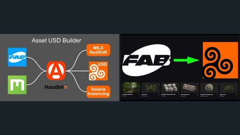
Carlo Jongen — FAB/MegascansアセットをUSD化するHoudiniツール解説2本
FABやMegascansのアセットをUSDへ一括変換しSolarisでのインスタンシングまで自動化するAsset USD Builderの紹介と、その前身にあたるFAB to USD Builderの短いデモ。

Unreal Engine 5 — 物理ベースライティング（PBL）を段階的に理解する
輝度と照度の違いから、PBL用のスカイマテリアルとスカイライト、屋内外の露出カーブまで、UE5の物理ベースライティングを順を追って解説する。

NVIDIA — OpenUSD Interactive Glossary
NVIDIAが公開する「OpenUSD Interactive Glossary」。Stage、Layer、Prim、Composition ArcsなどOpenUSDの主要概念を、インタラクティブな図解で視覚的に理解できるツール。

Blender — 光と影と空で作る大気感のあるレンダリング
Blenderでシネマティックな大気感を作るチュートリアル。ライト、影、空の作り込みと、ポストプロダクションでの仕上げを扱う。

Blender — Oceanモディファイアを使わずにシネマティックな海面を作る
重いシミュレーションに頼らず、プロシージャルなシェーダーノードだけで海面を構築する手法。シネマティックなショットや環境向けの内容。

Maya — USD Variantエクスポートツール
MayaからVariant付きのUSDをエクスポートするためのツール（GitHub公開）。

【無料】Houdini — Gaussian Splattingにリグ・アニメーションを組むチュートリアル
Houdiniでガウシアン・スプラッティングにRigを組んでアニメーションさせる無料チュートリアル「Animate Gaussian Splats with Houdini」。無料のシーンファイルも配布されている。

塚島氏 — PLATEAU×Houdiniミニチュアルック制作チュートリアル
塚島氏によるPLATEAU（3D都市モデル）とHoudiniを組み合わせた映像作品のチュートリアル。ミニチュアルックの再現方法などが紹介されており面白い内容。

デカールでテクスチャリングを速くする
弾痕からグラフィティまで、デカールがゲーム環境や3Dモデルをどう変えるかを、歴史と現代的な手法の両面から扱った解説。

Vincent Gagnon氏 — Gaea×Substance Designerでタイル化可能なテクスチャ制作の試み
Vincent Gagnon氏による、GaeaをSubstance Designerの一部として活用する試み「Eroded Dirt Mound」。Gaeaは浸食表現に優れるがタイル化に不向きなため、Substance Designerで補いテクスチャとして使えるかを検証している。

ポリフォニー・デジタル — CEDEC 2025講演、ニューラルネットワークによる次世代オブジェクトカリング
CEDEC 2025でのポリフォニー・デジタルによる講演。ニューラルネットワークを用いた次世代オブジェクトカリングシステムについて紹介している。後半は専門的で難しいが、前半のカリングシステムの説明でボロノイ領域が具体的に応用される様子が興味深いとしている。

Udemyより — PythonによるUEワークフロー自動化コース
Pythonを使ってUnreal Engineのワークフローを自動化する方法を学べるUdemyコース。

VFX SHOWDOWN — Nukeの無料GizmoとGradeノードの基礎2本
CGコンポジットで光を組み直す無料Gizmo「LightFusion」の紹介と、Gradeノードの正しい使い方を扱う11分の解説。

Unreal Engine 5.7 — 自作アセットでNanite植生を作る
Unreal Engine 5.7で、既製アセットではなく自作の植生をNanite対応させる手順を扱う30分強のチュートリアル。
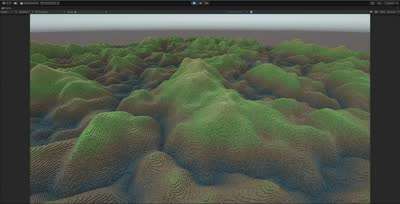
『デス・ストランディング2』 — ボクセルマップUIの仕組み解説
『デス・ストランディング2』で使用されたボクセル3D UIマップの仕組みについて解説する記事。

Kevin Baker氏 — 切り崩された崖と自然の崖の違いを解説
道路建設のために切り崩された崖と、自然な崖との違いについて解説するKevin Baker氏の記事。

CG Loungeより — William Fiorentini氏の最新チュートリアル『Glacier Breakdown』
William Fiorentini氏による最新チュートリアル「Glacier Breakdown and Project file」がCG Loungeで公開されたこと。

Rampage Rally 参加作品「Padora Protector」のブレイクダウン
Clint Jones（Pwnisher）主催の3Dコミュニティチャレンジ「Rampage Rally」への応募作のブレイクダウン映像。

Double Jump Academyより — ILM/DNEG出身Steven Corman氏の新チュートリアル『Advanced Matte Painting』
ILMやDNEGでの勤務経験を持つSteven Corman氏が、Double Jump Academyで新しい背景制作チュートリアル「Advanced Matte Painting」をリリースしたこと。使用ソフトはHoudini、Maya、Gaea、Nuke、Photoshop。

Houdini × Python — 画像処理活用事例
HoudiniとPythonを組み合わせた画像処理の活用事例。WebのURLから画像を読み込み、Pillowを使って画素をポイントとして並べる手法などが紹介されている。プラグイン開発以外の応用例として挙げている。

Bringing Concept Art to Life EP01「RAFT」 — コンセプトアートを立体で再現する
コンセプトアートを3Dで立ち上げていくシリーズの第1話。「RAFT」を題材に制作過程を追う内容。

3Dキャラクターを最短で作って動かす
コンセプトアートからスカルプト、UVペイント、3D衣装まで、各ツールを何ヶ月も学ばずに3Dキャラクターを作って動かすまでの流れを紹介する動画。

COLMAPによる完全自動の3Dカメラトラッキング
無償・オープンソースのCOLMAPだけで、映像から高精度な3Dカメラトラックと点群を得る完全自動ワークフローの解説。

Gaea 2 — 2つの山の間に川を通す
Gaea 2でTransform、Canyon、Lakeなどのノードを使い、2つの山の間に大きな川を通す手順のチュートリアル。

Alex Villabon — Nukeの作業効率を上げる解説動画2本
Nukeのアセットライブラリ「smartElements」の紹介と、スクリプトの最適化テクニック集。どちらもNukeの作業効率に関する内容。

DanTools — 高解像度地形生成ツール
実地形生成HDAの正式リリース。アメリカ国内では1m/pixelまたは10m/pixel、世界中では30m/pixelの解像度で地形を生成できる。SplatmapsはMeta SAM AIかカスタムのPython HDAで生成できる。

Claude-to-Unreal Connector — MCPベースのUnreal連携ツール、Beta版
ClaudeのBlender Connectorと同様にMCPをベースに実装された「Claude-to-Unreal Connector」。Beta版としてダウンロード可能。

Blender — テクスチャを毎回きちんと見せるための4つの手法
Blenderでテクスチャを扱う際に、投稿者が毎回のシーンで使っているという4つの手法を7分弱で紹介する動画。

Principled Houdini — Houdiniの基本原則を扱うYouTubeプレイリスト
Houdiniの基本原則を扱うYouTubeプレイリスト「Principled Houdini」。

V-Ray for Houdini — カメラ設定とレンズエフェクトの基礎
V-Ray for Houdiniの入門シリーズから、カメラの追加と設定、Houdiniの標準カメラのV-Ray Physical Cameraへの変換、レンズエフェクトを扱う回。

Substance Painter — 貼り付けた感を出さないステッカー表現
ステッカーをただ貼るのではなく、リアリティと物語性を足す効果とともに配置する手法を、Sierra Division Academyの講師が段階的に解説する。

note — 『Houdiniファイルを読み解く vol.1』
鈴木氏の許可を得て、公開されているHoudiniファイルから参考になった点をまとめたnote記事「Houdiniファイルを読み解く vol.1」。

【無料】空パノラマ写真140枚 — 非商用利用
非商用利用であれば無料で入手できる、140枚の空のパノラマ写真素材「Free panoramic clouds」。
フリーランスのコンセプトアーティストとして生きていくには
スタジオを離れてフリーランスのコンセプトアーティストになることを考えている人向けに、実際にやっていくための考え方を扱った動画。

80lv — HoudiniとUE5で作る精緻な蓮のシーン
HoudiniとUE5を使って精緻な蓮（Lotus）のシーンを制作した過程を解説する80lvの記事。ArtStationにも制作ブレイクダウンが公開されている。

毎日作品分析Day31・最終日 — 構造線とバランス
毎日作品分析シリーズ最終日（Day31）のテーマとして、構造線とバランスについての分析。多くの人が無意識のうちに認識している要素であるとしている。
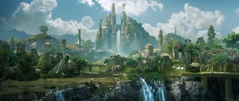
毎日作品分析Day30 — 視線分散型の構図「Scattered」
特定の焦点に視線を集中させるのではなく、作品全体に目が行くよう設計された構図「Scattered」についての分析（毎日作品分析Day30）。世界観を伝える際に有効な手法だとしている。

毎日作品分析Day29 — コントラストの効果
コントラストを活かした作品を集めた分析（毎日作品分析Day29）。

Stable Diffusionでディスプレイスメントマップを作る
Stable Diffusionで画像から深度マップを生成し、それをディスプレイスメントマップとしてジオメトリを起こすまでの手順解説。

Houdiniによる岩・石のブレイクダウン映像（Julien Rollin氏提供）
80 Levelが公開している、Houdiniで作られた岩・石のブレイクダウン映像。映像はJulien Rollin氏の提供。

毎日作品分析Day28 — 円形構図の効果
円形構図を用いた作品を集めた分析（毎日作品分析Day28）。

毎日作品分析Day27 — 雲の表現
雲の表現が印象的な作品を集めた分析（毎日作品分析Day27）。

毎日作品分析Day26 — シンメトリー構図の効果と限界
左右対称（シンメトリー）構図についての分析（毎日作品分析Day26）。安定感はあるがそれだけでは単調になりがちなこと、対称が崩れると不安定さを感じることについて考察している。

Cinema 4D × Octane — 背景制作チュートリアル
Cinema 4DとOctaneを使った背景制作チュートリアル「Environment Creation using Octane and Cinema 4D」。Houdiniのプロシージャル技術などを除けば、ツールに依存しない学びが多いという考えも添えている。

毎日作品分析Day25 — 背景制作におけるスケール感の演出
背景制作において広さを感じさせるスケール感の演出についての分析（毎日作品分析Day25）。単純に広い空間にスケール比較用の人物などを置くだけでは十分ではないという考察から始まっている。

USDファイルにPythonスクリプトをペイロードとして埋め込む
処理の指示をUSDファイル自体に同梱し、パイプラインの異なる環境でも処理できるようにするという手法の解説。usd-coreモジュールで一から構築する。

毎日作品分析Day23 — Sci-fi/近未来的な印象を作るシルエット
Sci-fiや近未来的な印象を無意識に感じる理由についての分析（毎日作品分析Day23）。代表的なシルエットや形が大きな要素になっているという考察が記されている。

毎日作品分析Day22 — 自然×SFの組み合わせ分析
自然とSFを組み合わせた表現についての分析（毎日作品分析Day22）。自然の立地を利用したSF的な基地や建物など、効果的に使われる組み合わせパターンについて考察している。
毎日作品分析Day21 — 青×黄の配色
青と黄を基調とした配色の作品を集めた分析（毎日作品分析Day21）。

毎日作品分析Day20 — 逆光・バックライトの効果
逆光（バックライト）を活かした作品を集めた分析（毎日作品分析Day20）。

毎日作品分析Day19 — 薄暗い作品「Gloomy」の分類
薄暗い雰囲気の作品を2つのタイプに分けた分析（毎日作品分析Day19）。現実に存在しないものが神秘的な印象を与えるタイプと、日常的なものが恐怖や不安を掻き立てるタイプがあるという考察が記されている。

岡崎昇平氏 — FX的Height Fieldの活用法
岡崎昇平氏による、地形生成以外のHeight Fieldの変わった使い方を紹介する記事。Height Fieldが軽量でUVも扱いやすく、booleanのshatterに適しているという点が勉強になった。
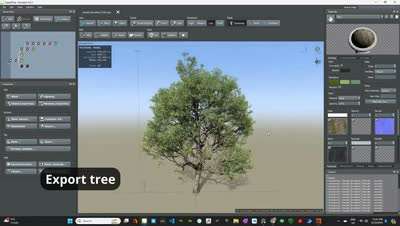
SpeedTreeアセットをSolarisのUSDコンポーネントに変換するHDA
SpeedTreeから書き出したアセットを、Solaris上でUSDとMaterialXシェーダのコンポーネントに組み立てる自作HDAの紹介。

Blender — レンダーレイヤーの使い方と合成までの流れ
Blenderのレンダーレイヤーの考え方から、HoldoutとIndirectの違い、Blenderコンポジタとの連携、After Effectsでの合成までを扱う解説。

Okazaki Shohei氏 — 記事『Houdini Workflowについて』
プロダクションで働き始めパイプラインやワークフローに興味を持つ中で参考になった記事「Houdini Workflowについて」（@_ShoHey_氏）。難しすぎず、ためになる内容だった。

毎日作品分析Day18 — ワンポイントレッドの効果
大規模な背景の中にワンポイントで赤を入れることで主役を際立たせる手法についての分析（毎日作品分析Day18）。赤という色自体が、ワンポイントでも強さを感じさせる効果があるという気づきが記されている。

ポリフォニー・デジタル — Houdini/Python関連の講演記事まとめ
ポリフォニー・デジタルによるこれまでの講演記事がまとめられたページ。Houdiniや Pythonに関する有料級の記事を無料で読める。

SideFX Labs — Labs Lot Subdivision作例解説
SideFX Labsの「Labs Lot Subdivision」を使った作例。パラメータの説明や知られていない機能・使い方も紹介されている。

Labs Lot Subdivision — 区画・レンガ・植栽配置への応用アイデア
Labs Lot Subdivisionについて、建物の区画作成やレンガパターン、植物・木の配置など、思いつかなかった応用アイデアが多くあり面白いという感想。
Art of Composition Day16 — 構図のルールを破る
構図のルールは法律ではなくガイドラインであり、感情やコンセプトを強く出すにはあえて崩すほうが有効な場合があるという考え方を、Abram Arkhipov『Smiling Girl』を例に解説（Art of Composition Day16）。被写体の頭部が画面上端まで伸びる構図が親密な雰囲気を高めていると述べ、この回でシリーズの毎日更新を一区切りとしている。

毎日作品分析Day17 — オレンジ×黒の配色分析
オレンジと黒の2色を基調とした作品群（毎日作品分析Day17）。オレンジで見せたいものを照らすという発想だけでなく、この配色では黒の方が主役になることが多いという気づきが記されている。
Art of Composition Day15-2 — Rule of Odds（奇数の法則）
Paul Cézanne『The Three Skulls』を題材に、要素の数は奇数のほうが視覚的に魅力的に見えるというRule of Odds（奇数の法則）を解説（Art of Composition Day15-2）。奇数が生む「余り」が違和感と緊張感を作って観察を促すという理屈と、3・5・7と数が増えるにつれ群れとして認識されていく違いをまとめている。
Art of Composition Day15-1 —『Washington Crossing the Delaware』（1851）
メトロポリタン美術館で実見した1851年の大作『Washington Crossing the Delaware』についての所感（Art of Composition Day15-1）。雲の間から差し込む光がワシントンのシルエットを際立たせ、まっすぐ陸地を見つめる姿から独立戦争への決意と勇敢さが感じられると述べている。

Guillem H. Pongiluppi氏 — 毎日作品分析Day14『ZE』カバーアート
Guillem H. Pongiluppi氏による小説『ZE』のカバーアート（毎日作品分析Day14）。ディテールを抑える部分と描き込む部分のバランスの巧みさについての気づきが記されている。

V-Ray — ArchViz向けの窓ガラスシェーダを作り込む
ベースシェーダから表面のばらつき、UVマッピング、歪み、汚れまで段階的に足していき、基本を超えた窓ガラスの質感を作るV-Rayのチュートリアル。

lok du氏 — Art of Composition Day14『Dragon-Li descending the mountain』
手前から奥へ波打つ手すりと屋根のカーブが視線を誘導し、その終点に人物を置いた構図の分析（Art of Composition Day14）。直線ではなく曲線で構成することで人工物でも有機的で温かい印象になる点、外へ広がる木々が閉塞感を消し、明度と密度のコントラストが左奥への奥行きを作る点を挙げている。

Wingfoxより — Ubisoft/EA出身Environment Concept Artistのチュートリアル
UbisoftやEAで勤務経験のあるEnvironment Concept Artistによるチュートリアル「The Lost Soldier - Environment Concept Design」（Wingfox）。BlenderとPhotoshopを使い、主にデザイン面にフォーカスした内容。

Felix Riaño氏 — Art of Composition Day13『New Delhi』
バザールの屋根のラインが中心下部に収束し、遠近感を出しながら門へ視線を誘導する構図の分析（Art of Composition Day13）。斜めの光が門全体のディテールを見せる効果、人物から人混み・門・鳥・空へ段階的に視線が上がる設計、影のフレーミングと電線の横ラインによる安定に触れている。

Conar Cross氏 — 毎日作品分析Day12-2『Spires』
Conar Cross氏の作品「Spires」（毎日作品分析Day12_2）。シンプルな構図でも、山肌を二層にした奥行き表現や大中小のリズム、抜け感などの要素を組み合わせることでクオリティを高めているという気づきが記されている。

Florent Lebrun氏 — 毎日作品分析Day12-1『Wanderers』
Florent Lebrun氏の作品「Wanderers」（毎日作品分析Day12_1）。歩く連続ショットが、自信満々ではなく緊張感と不安感を伝えるようデザインされているという気づきが記されている。

Mauger Baptiste氏 — Art of Composition Day11『AIDIN - CITY ENVIRONMENT』
左の建物の三角構図が安定感と権威を、橋と夕日のV字構図が人物への視線誘導を担う都市背景の分析（Art of Composition Day11）。道路の視線誘導ラインによってマクロからミクロへ流れる読み順、木のシルエットと陰をフレームとして使う手法を挙げている。

Felix Riaño氏 — Art of Composition Day12『Grazing』
手前の羊と人物をスケールの基準に置くことで奥の建築物の巨大さを一瞬で伝える構図の分析（Art of Composition Day12）。丘の起伏が重なるレイヤーで奥行きを作り、光の当たる3つのポイントで視線がループする設計を読み解いている。

Blender — フォトリアルなテクスチャ制作解説
Blenderでフォトリアルなテクスチャを制作する方法を解説する動画。

Max Schiller氏 — 毎日作品分析Day11-2『Tempel der Verdammnis』
Max Schiller氏の作品「Tempel der Verdammnis」（毎日作品分析Day11_2）。主役はシンメトリーを保ちつつ、他の要素を左右非対称にすることで単調になりがちなシンメトリー構図がより効果的になるという気づきが記されている。

sanghoon oh氏 — 毎日作品分析Day11-1『Erephora – Kaiju』
sanghoon oh氏の作品「Erephora – Kaiju」（毎日作品分析Day11_1）。シンプルな構図・色・ライティングが、長い牙を持つキャラクターを見せる上で最も効果的な手法だという気づきが記されている。

Pierre Lazarevic氏 — Art of Composition Day10『vroomvroom』
S字構図の川が流動感を与えつつ奥へ視線を誘導し、視線の終点が始点に接続してループする構造の分析（Art of Composition Day10）。同形状の岩の反復が生む視覚的リズムと、拡散光とエッジの効いたハイライトという光の質の違いで主役を分離する手法に触れている。

Sparky LEE氏 — 毎日作品分析Day10『Project Windless』
Sparky LEE氏の作品「A keyframe for Project Windless」（毎日作品分析Day10）。主人公自体を強く見せるだけでなく、他の要素を足すことで表現を強調できるという気づきが記されている。

Christian Auer氏 — 毎日作品分析Day9『Fall Elegy』
Christian Auer氏の作品「Fall Elegy」（毎日作品分析Day9）。夕方の温かい光と弱めのコントラストによって水彩画のような優しい印象を受けるという気づきが記されている。
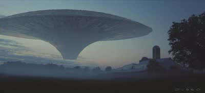
Yanick Dusseault氏 — Art of Composition Day9の作品分析
巨大な飛行物を画面に収めず見切れさせることで圧迫感と侵略感を生んだ作品の分析（Art of Composition Day9）。対角線で分けられた非日常と日常、逆三角形と三角形によるシルエットの対比、フォグで奥を隠しつつディテールの密度を抑えて視線を集める手法を読み解いている。

Unreal Engine 5で作ったシネマティック短編のブレイクダウン
Kitbashのコンテスト「Secrets of the Luminara」向けに、有償・無償アセットとプラグインを組み合わせて約3週間で作った短編のブレイクダウン。

Houdini 20 Karma XPU — ナイトシティのWIP作品
Houdini 20のKarma XPUでレンダリングされた夜の都市シーンの制作途中の映像。11秒の短いクリップ。

CG Lounge — Arvid Schneider氏運営のジャーナル
Image EngineのLighting Supervisor、Arvid Schneider氏が運営するCG Loungeのジャーナル。様々な記事がまとめられている。

Tarmo Juhola氏 — 毎日作品分析Day8『Going to church』
Tarmo Juhola氏の作品「Going to church」（毎日作品分析Day8）。教会に比べ小さく描かれた赤いマントの人物から強さや勇敢さを感じるという気づきが記されている。

Jonathan Berube氏 — Art of Composition Day8『StarCraft II Cinematic Matte Painting』
高密度と低密度を分けた密度のコントラストで視線を誘導しつつ逃げ道も用意した都市のエスタブリッシングショットの分析（Art of Composition Day8）。手前の雲が作るレイヤーとフレーム効果、建物の高低差が生むリズム、身近な建築物をスケールの基準として観客に与える手法に触れている。

Darek Zabrocki氏 — 毎日作品分析Day7『ZORADX - Vistas』
Darek Zabrocki氏の作品「ZORADX - Vistas」（毎日作品分析Day7）。スターウォーズのスターデストロイヤーなど、デザイン面での学びについての気づきが記されている。

Victor Anceaume氏 — Art of Composition Day7『Duel of fates』
山や岩、川の線が中心へ向かい、対峙する二人の間を視線が往復する構造の分析（Art of Composition Day7）。傾いたカメラが生む緊張感、空のネガティブスペースが作る「間」、鳥のモーションブラーによって中心人物の時間の流れが相対的に遅く感じられる効果を挙げている。

Steffen Hampel氏 — 『Fallout』ファンアート最新作
Steffen Hampel氏による『Fallout』のファンアート最新作。レンダリングがくっきりしていて美しくリアルだと評している。

Matt Barker氏 — 写真からのHoudini Scatterワークフロー
Matt Barker氏による、リファレンス写真からHoudiniでScatterする手法。写真をカメラプロジェクションし、そこにScatterして写真の色をポイントに持たせ、木のタイプに応じてポイントをソートするという3ステップの流れが解説されている。

Max Schiller氏 — 毎日作品分析Day6『Elder Scrolls Online』Key Art
Max Schiller氏による『The Elder Scrolls Online』のキーアート（毎日作品分析Day6）。明確な構図に加え、プロップが世界観をしっかり支えている点への気づきが記されている。
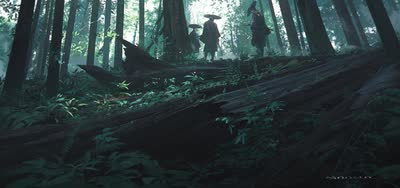
Catan氏 — Art of Composition Day6『Daily painting』
倒木で画面を上下に分割し、上は光と軽さ、下は影と重さという印象の対比を作った作品の分析（Art of Composition Day6）。人物を3人にすることで生まれる安定と広がり、顔が見えないことによる匿名性、視線が倒木の奥の空間へ抜けていく設計に触れている。

Julian Calle氏 — 毎日作品分析Day5-2の作品分析
Julian Calle氏の作品（毎日作品分析Day5_2）。フレーミングによる視線誘導と、抜け感の有無によるスケール感の違いについての気づきが記されている。

Raphael Lacoste氏 — 毎日作品分析Day5『MIDGARD』
Raphael Lacoste氏の作品「MIDGARD」（毎日作品分析Day5）。上手いアーティストは三分割法を使わなくても見せ方が上手いという気づきが記されている。

Max Kutsenko氏 — 『Wooden Roof Shingles』制作解説
テクスチャアーティストMax Kutsenko氏による作品「Wooden Roof Shingles」。Houdiniでプロシージャルに屋根と煙突を生成し、UEでシェーディング・ライティングまで行う手法。特にSubstance Designerでノイズから強弱グラフを生成しマスクとして使う手法が興味深いと評している。
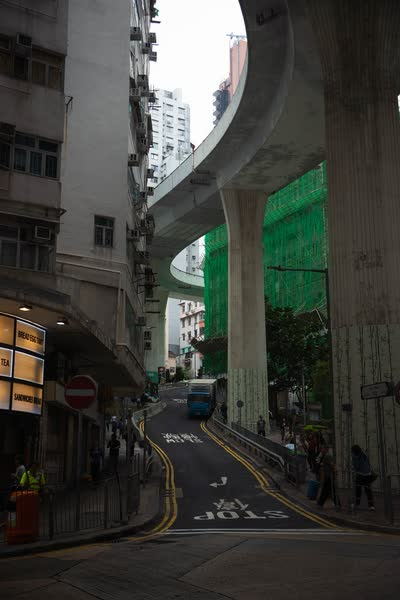
Art of Composition Day5 — S字構図で奥行きと動きを出す
画面内にS字の緩やかな曲線を描くように要素を配置するS字構図の解説（Art of Composition Day5）。視線を誘導して奥への広がりを強調し場面に動きを与える一方、S字の中央が建物に隠れてしまった自身の撮影上の反省も記されている。

Darek Zabrocki氏 — 毎日作品分析Day4-2『Windmill Town』
Darek Zabrocki氏の作品「Windmill Town」（毎日作品分析Day4_2）。物量・クオリティともに圧倒的だという気づきが記されている。

Procedural Rock Wall Tool — 『アサシンクリード シャドウズ』の岩壁生成HDA
『アサシンクリード シャドウズ』で使用された、2Dマスクから3Dモデルを生成するHDA「Procedural Rock Wall Tool」。写真から岩壁のマスクを作り、Houdiniでディテールを追加後、Zbrushでさらにディテールを足すワークフローが採用されていたと推測している。
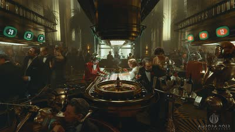
Tim Razumovsky氏 — Art of Composition Day4『AURORA NOIR - High Rollers』
複数の主役を中央のルーレットを核に放射状へ配置し、視線が外側と内側を循環する構造を読み解いた分析（Art of Composition Day4）。外側ほど弱まる明暗コントラスト、液晶の色が視線を画面内に留めるフックとして働く点、直線的なArt Deco様式の中で円形が異質に際立つ点を挙げている。

Raphael Lacoste氏 — Art of Composition Day3『Norse Church : AC Valhalla』
Raphael Lacoste氏『Norse Church : AC Valhalla』の分析（Art of Composition Day3）。ストーリーを左から右・手前から奥へ流し、大きさの異なる要素を段階的に配置することでスケール感とレイヤー構造による奥行きが生まれると述べている。自分の写真だけでなく他の作家の作品分析へ軸足を移す宣言も添えられている。

Blender — マクロ撮影のようなフォトリアルを作る
フォトグラメトリの取り方、ジオメトリの最適化、アダプティブディスプレイスメント、ライティングまでを5分にまとめたマクロ表現のチュートリアル。

Pablo Dominguez氏 — 毎日作品分析Day4『ElvenRoad Town』
Pablo Dominguez氏の作品「ElvenRoad Town」（毎日作品分析Day4）。良い作品は白黒にしても十分に美しいという気づきが記されている。
Eric Hallquist氏 — 毎日作品分析Day3『Tower of the Exiled Magi』
Eric Hallquist氏の作品「Tower of the Exiled Magi」（毎日作品分析Day3）。構図だけでなく建物のデザインも優れているという気づきが記されている。

Dylan Cole氏 — 毎日作品分析Day2『The First Outpost』
Dylan Cole氏の作品「The First Outpost」（毎日作品分析Day2）。右側の建物が何かわからなくても画として説得力があることへの気づきが記されている。
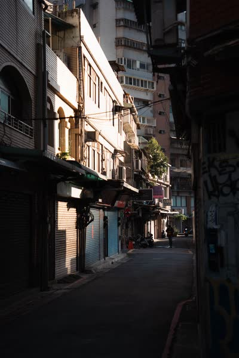
Art of Composition Day2 — 縦構図の路地と一点透視・フレーミング
路地が奥へ収束する一点透視的な構造で視線を奥へ導き、左右の暗い壁をフレームとして機能させた縦構図の写真の分析（Art of Composition Day2）。前景・中景の被写体・奥の建物を重ねたレイヤー感で奥行きを表現している。

毎日作品分析 — 目を鍛えるためのチャレンジを開始
目を鍛えるため、毎日1つ、自分が良いと思った作品を分析するチャレンジを開始する。
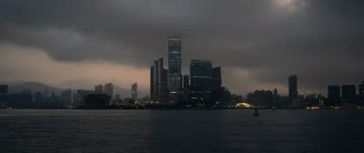
Art of Composition Day1 — ピラミッド構図とホライゾンライン
自身の写真をもとに、ピラミッド構図が画面に安定感を与えつつ視線を対象へ誘導し、さらに視線を途切れさせず動かし続けさせることを解説（Art of Composition Day1）。ホライゾンラインを水平に保つことの重要性にも触れている。

V-Ray 7 — 3Dガウシアンスプラッティングの読み込みと設定
3Dガウシアンスプラッティングとは何か、V-Ray 7への読み込み方、VRayGaussiansGeomのパラメータやスケール確認・ライティングまでを扱う解説。

Maxime Gerardin — Blenderのシネマティック環境制作ブレイクダウン
Blenderで作ったシネマティックな環境ショットの制作過程を、リファレンス集めからライティング・仕上げまで17分で解説したブレイクダウン。
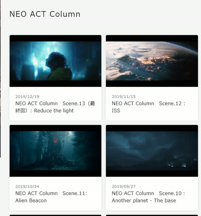
今川真史氏 — 絵作りについてのコラム
今川真史氏による、絵作りについて論じたコラム。6年ほど前のものだが、とても勉強になる。

『オブリビオン』がグリーンバックを使わなかった理由 — フロントプロジェクションの再発見
『オブリビオン』が、The Mandalorianに先立ってフロントプロジェクションで空中3000フィートのセットを撮影した手法を追った解説。

Houdini — プロシージャルモデリングのテクニック集動画
プロシージャルモデリングで使える様々なテクニックをまとめた動画「All* the Procedural Modeling tricks in one video」。何ができるか知ることで引き出しが増えるという考えも添えている。

レイトレーシング・Lumen・パストレーシングの違いを整理する
レイトレーシング、Lumen、パストレーシング、ラスタライズの違いと、それぞれの得手不得手を初心者向けに整理した19分の解説。

Darek Zabrocki氏 — Displacement活用都市景観チュートリアル
Darek Zabrocki氏による、Octaneと3ds Maxでディスプレイスメントを活用した都市景観制作チュートリアル。

cgside — Houdiniのプロシージャルモデリングとリギング解説3本
Voronoi Fractureでレンガ壁をランダム化する回、KarmaでUVWランダマイザを組む回、Houdiniで機械的なリグにカスタムコントロールを付ける回の3本。

Houdini — 葉のレンダリング手法比較、Geometry/Stencil/Opacityの速度差
木の葉のレンダリング時間を、Geometry（16秒）、Stencil（27秒）、Opacity/Texture（2分35秒）の3手法で比較検証。Solarisでは、Scatterする場合はAlphaでモデルをカットアウトし、それ以外はOpacityなしで使うのが最適ではないかと考察している。

Megascans Bridge — ハイポリダウンロード設定とPoly Reduceの目安
Megascans Bridgeで「Highpoly Source」をオンにするとハイポリアセットもダウンロードできることを紹介。そのままでは重いため、近景でなければ10%以下までPoly Reduceしても問題なさそうという目安も共有している。

Berika Lobzhanidze — Houdiniのインスタンス構築とSolarisライティング解説2本
スキャッター内の個体を制御できる効率的なインスタンスシステムを作る回と、Solarisでシーンをゼロから組んでライティングする回の2本。

Gate to the Afterlife — 制作全工程動画
作品「Gate to the Afterlife」の制作全工程を追った動画。
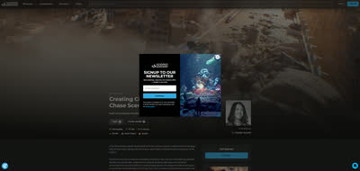
【無料】岩崎氏 — Gnomon Workshopのチュートリアル
岩崎氏による無料のチュートリアルがGnomon Workshopで公開されていること。

Unreal Engine — 「UE臭さ」の原因と解消法を解説
いわゆる「Unreal Engineっぽい見た目」の原因と、その解消方法を解説した動画。

Advanced Environment Interaction — UEプラグイン
リアルタイムでオブジェクト同士のインタラクションを計算するUnreal Engine用プラグイン「Advanced Environment Interaction」。

Render Node Comparison — レンダラー別ノード比較サイト
レンダラーごとに異なるノード名をまとめて比較できるサイト「Render Node Comparison」。レンダラーを切り替えた際にノード名がわからない時に便利。
Houdini — 破壊にともなう粉塵のインタラクションを作る
ジオメトリと地形の読み込みから、パーティクル・デブリ・粉塵のシミュレーション、Karmaでのレンダリングまでを扱う20分のHoudiniチュートリアル。

AI — Clay Shaderをレンダリングする手法解説
AIを使ってClay Shaderをレンダリングする方法を解説した動画「The NEW Way To Use AI For 3D Artists」。CGが上手い人はAIの使い方も上手だという感想を添えている。

Adobe公式 — Substance 3D PainterのACES対応を解説するシリーズ全3本
Substance 3D PainterでACESを扱うための公式解説シリーズ。カラースペースの基礎、PainterでのOCIO設定、Maya・Blenderへの受け渡しを3本で扱う。

Scales — 鱗生成HDA
鱗（うろこ）を生成できるHoudini用HDA「Scales」。

Miguel Angel Arribas Sánchez氏 — ComfyUIで1フレームから360度アニメーション生成
ComfyUIを使い、1枚のフレームから360度アニメーションを生成する手法。Gaussian SplattingとHoudiniも併用することで精度が向上する。Miguel Angel Arribas Sánchez氏による手法。

Houdini — VEXで作るプロシージャル木材シェーダー
HoudiniのVEXを使ったプロシージャルな木材シェーダーの作り方を解説する動画。

Blender 5.0でつくる、映画のような霧に包まれた南国の島
Megascansなどのスキャンアセットを組み合わせることで、低コストでリアルな岩や崖を制作できる手法（参考動画つき）。同じ作品で、崖に草を生やすマスクをNormal+AO併用で作るとよりリアルになるというTipsも。

HoudiniのGPUツールチェーンでUnreal上の64km²地形をリアルタイム編集
8129×8129pxの64km²地形をUnrealエディタ上でリアルタイム編集する自作Houdiniツールチェーンのショーリール。計算の大半をGPUで処理している。

Omniverseでデジタルツインを構築するチュートリアル
Loupeがオープンソース化したツールを使って、Omniverse上でデジタルツインを構築する手順を扱う24分のチュートリアル。
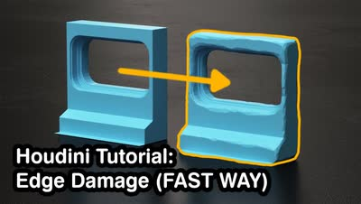
Houdini — 1分半で終わるエッジダメージの高速セットアップ
Houdiniでモデルのエッジにダメージを加える手順を1分半にまとめた短いチュートリアル。remesh→smooth→peak→boolの流れで構成されている。

Hoj Dee — Unreal Engineのマテリアル解説2本（Naniteテッセレーションとセルボミング）
NaniteテッセレーションとハイトLerpを使った頂点ペイントの回と、テクスチャの繰り返しを解消するセルボミングの回の2本。

レンズフレア徹底解説 — なぜレンズは光り、どのレンズが美しく滲むのか
レンズがフレアを生む仕組みと、フレアの種類の違いを解説した動画。後半では実機のレンズをフレアの美しさで比較・ランク付けしている。

モジュラーな3Dキットの作り方 — Sony Santa Monica Jon Arellano氏
Sony Santa MonicaのJon Arellano氏が、モジュラーキット制作をキット理論から実演まで扱う1時間半の講座。ハードサーフェス／オーガニック両方のパイプラインを解説する。

OpenUSDとは何か — 3Dの相互運用性を実現する仕組み
「OpenUSDという言葉は聞くが結局何なのか分からない」という層に向けて、Autodeskが基礎から解説する1時間強のセッション。

SpeedTree — 樹皮のディテールを足すMesh DetailとDecalジェネレータ
SpeedTreeの新しいジェネレータ2種を解説。樹皮の外側にハイポリのディテールを加えて、不自然な規則性や繰り返しを隠す用途を扱う。

Houdini — Atlas Texture Generator解説動画
HoudiniのAtlas Texture Generatorについて解説する動画。

3ds Max × tyFlow — VDBを使ったAdvected Growthの作り方
3ds MaxとtyFlowで、VDBを使って侵食するように広がっていくグロース表現を作るチュートリアル。

Nuke + ComfyUI — クリーンアップ手法
NukeとComfyUIを組み合わせたクリーンアップ手法を解説する動画。

LOPs — USD Render Prims解説動画
HoudiniのLOPsにおけるUSD Render Primsについて解説する動画。

Render Factory — Houdini Python学習コンテンツ
HoudiniでのPythonの使い方を学べるサイト「Render Factory」。Python基礎、Houdini内でのPython、UI作成といったレッスンが用意されている。

大規模環境制作 — マスターするためのTips記事
大規模な環境制作をマスターするためのTipsをまとめた記事。

smartCache — Nukeのプリレンダーを扱うCRAGLのツール
CRAGL VFX toolsのNuke用プラグイン「smartCache」を、3分半で概観する紹介動画。

ITOO SOFT — Forest Pack開発元による背景制作Tips
3ds MaxのForest Packを開発するITOO SOFTが公開している背景制作のTips。使用ソフトが異なっても根本の考え方は共通するため勉強になるとしている。

GitHubより — Houdini Tips集『MysteryPancake/Houdini-Fun』
Houdiniに関する有益なTipsがまとめられたGitHubリポジトリ「MysteryPancake/Houdini-Fun」。

Gaea — 詳細解説チュートリアル『Yukon River Valley』
Gaeaを使った地形制作を詳しく解説するチュートリアル「Gaea Breakdown: Yukon River Valley」。ここまで詳しい解説は珍しいとしている。

Maya — PySide2の.ui利用かPython化かを解説する記事
MayaでPySide2の.uiファイルをそのまま使うべきか、Python化して利用すべきかを解説するUnzai氏の記事。

レンズフレアとは物理的に何なのか
レンズフレアやゴーストがなぜ発生するのかを、光学的な仕組みから解説した5分の動画。日食の写真に写り込む虚像を題材にしている。

codercat — Houdiniの便利なノードセットアップまとめサイト
Houdiniで便利なノードセットアップがまとめられているサイト「codercat」。

Blender × QGIS — DEMデータから3Dの標高マップを作る
QGISからDEM（数値標高モデル）とマップテクスチャを書き出し、Blenderに読み込んで3Dの標高モデルを作る手順の解説。

Christian Bohm氏 — ILM/Framestore出身によるHoudiniチュートリアル
ILMやFramestoreで勤務経験のあるChristian Bohm氏によるHoudiniのチュートリアル。

Houdini — PySideでUIを作るクイックスタート動画
HoudiniでPySideを使ったUIを作成する方法を解説する動画「Creating Pyside UI in Houdini」。
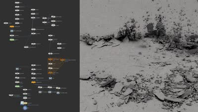
Houdini — 地面の破壊エフェクトをシンプルに作る
HoudiniのFXで地面が崩れる破壊エフェクトを作る、43分のチュートリアル。
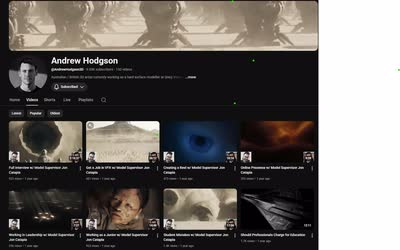
Andrew Hodgson氏 — Blizzard所属モデラーのYouTubeチャンネル
Blizzard EntertainmentのSr. Hardsurface Modeller II、Andrew Hodgson氏のYouTubeチャンネル。

植物の生育傾向 — CGでのリアリティ向上テクニック
植物が空間の空いている方向に伸びる性質をCGで表現することで、よりリアリティが増すというテクニック。

Unreal Engine 5 — ACEScgワークフロー解説
Unreal Engine 5でのACEScgカラーワークフローについて簡単に解説する動画。

Nuke — カーブとHueで作る水中ルックのデプス処理
水深によって特定の色が失われる現象を、線形なデプス処理ではなくColorLookupとHueCurveで再現する水中ルックのチュートリアル。

Naughty Dog — Principal Environment Artistによる『The Last of Us Part I』ブレイクダウン
Naughty DogのPrincipal Environment Artistによる、『The Last of Us Part I』の制作ブレイクダウン（ArtStation）。
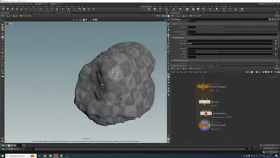
Houdini — 高密度ジオメトリのポリゴン削減を実務レベルで扱う
Houdiniのpolyreduceと、非常に高密度なジオメトリの扱い方を概観する19分の解説。

環境アーティスト — 22のプロTips記事
環境アーティスト向けの22のプロTips集をまとめた記事。

Eagle — 画像・リファレンス管理ツール
画像・リファレンス管理ツール「Eagle」。

Substance Painter — 大規模UDIMアセット向けのLayer Instancing機能
UDIMが何十枚にもなるような大規模アセットのテクスチャリングに役立つ、Substance Painterの「Layer Instancing」機能。

CGWORLD — Houdini×USDによるAurora Innovationの自動運転用デジタルツイン生成
Houdini×USDを使ってデジタルツインを生成し、自動運転シミュレーションに活用しているAurora Innovationの事例を紹介するCGWORLDの記事。同社には元Pixarのアーティストも在籍している。
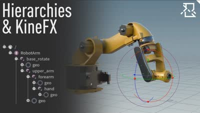
Houdini — SOP内でUSDコンポーネントの階層を組みKineFXで動かす
SOPコンテキストの中でUSDコンポーネントの階層を構築し、KineFXでアニメーションさせる手法を扱った詳細な解説。

Axiom — 開発者Matt氏が新ソルバーをリリース
流体シミュレーションツール「Axiom」を開発したMatt氏が、新しいソルバーをリリースした。

3D to ComfyUI — HoudiniとNano Banana、ComfyUIの連携ワークフロー
Houdiniのスナップショットを基にNano Bananaで画像を生成し、ComfyUIでHoudiniのFlipbookと組み合わせるワークフロー「3D to ComfyUI」。

Nuke — カメラトラッキングの基礎
NukeのCameraTrackerノードを使って、正確なカメラトラックを得るまでを扱う初心者向けチュートリアル。
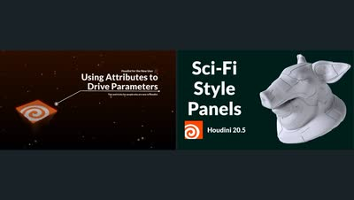
Inside The Mind — Houdiniのアトリビュート活用とSci-Fiパネル生成2本
アトリビュートで他ノードのパラメータを駆動する初心者向けの回と、Group Find Pathノードでsci-fi風のパネルやグリーブルを生成する回の2本。

CG Loungeより — Steffen Hampel氏の新チュートリアル『Sicario Full CG Breakdown』
Steffen Hampel氏の新しいチュートリアル「Sicario - Full CG Breakdown」がCG Loungeで公開されたこと。

Pablo Dominguez氏 — コンセプトアーティストの作品とチュートリアル
コンセプトアーティストのPablo Dominguez氏の作品。田島氏も高く評価している。Learn Squaredでのチュートリアルも紹介されている。

Houdini × ComfyUI — カメラプロジェクション自動化ツール
HoudiniとComfyUIを連携させ、カメラプロジェクションを自動化するツール。
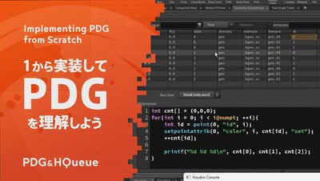
HoudiniのPDGとHQueue — 基礎を実装して理解する
他ソフトに類似機能が少なく理解しづらいHoudiniのPDGについて、まず基礎を実装してみることで掴もうという日本語の解説動画。

Darek Zabrocki氏 — 『猿の惑星』『Secret Level』のコンセプト作品
映画『猿の惑星』やNetflixシリーズ『Secret Level』のコンセプトを手掛けたDarek Zabrocki氏のウェブサイト。

Dusso氏 — 作品を紹介
高品質な作品を多く手掛けるDusso氏のウェブサイト。

Blender 5.0 — フォトリアルな空の表現
Blender 5.0でフォトリアルな空を表現する方法を解説した動画。

Samuel Krug — Gaeaの火星クレーターとHoudiniの雲シミュレーション解説2本
Gaeaでフォトリアルな火星のクレーターを8分で作る回と、Houdiniでの積雲のセットアップを未編集で見せる約1時間50分の回。

Guy's Dojo — Maya・After Effects・NUKEをまたぐACES/OCIOワークフロー
Maya・After Effects・NUKEを行き来する制作で、ACESのカラースペースとOpenColorIOのプロファイルをどう管理するかのデモ。

Solaris — 名前によるマテリアルアサイン方法
Houdini Solarisで名前を使ってマテリアルをアサインする方法を解説した動画。

Dylan Cole氏 — Avatar/Alitaのプロダクションデザイナーによるスタジオサイト
映画『アバター』や『アリータ：バトル・エンジェル』のプロダクションデザイナーを務めたDylan Cole氏のウェブサイト「Dylan Cole Studio」。

Substance Painter — 実用テクニック解説動画
Substance Painterの知っておくべき強力なテクニックを解説する動画。

FMX 2021 — アーティストのためのUSDパイプライン（Prism）
Prism 2.0の標準USDワークフローを、モデリングからサーフェシング・リギング・レイアウト・FXまで工程ごとに辿るFMX 2021の講演。

Procedural Art — Hero Qualityであるべきという主張の記事
プロシージャルアートは「まあまあ良い」で終わらせず、Heroクオリティを目指すべきという主張の記事。

VFX × AI — ワークフロー共有プラットフォームを紹介
VFXにおけるAIのワークフローを共有するプラットフォーム。

Jakub Bazyluk氏 — 都市デザイン作品『Circles』ブレイクダウン
Jakub Bazyluk氏による都市デザイン作品「Circles」の制作ブレイクダウン。

BlenderGIS — OpenTopographyのAPIキーを設定して標高データを取得する
OpenTopography側のAPIキー必須化でBlenderGISの標高データ取得が失敗する問題を、設定を書き換えて解消する手順の解説。
Activision Blizzard ワールドアートディレクター Aaron Limonick氏インタビュー
Activision Blizzardのワールドアートディレクター Aaron Limonick氏へのインタビュー。制作プロセスや、グラフィティ出身という経歴が業界入りにどう繋がったかを語る。

【無料】木アセット — 22個を紹介
無料で入手できる22個の木のアセット。

Arvid Schneider氏 — Image Engine所属、手数料無料の販売プラットフォームをローンチ
Image EngineのLighting Supervisor、Arvid Schneider氏が、CGアセットやチュートリアルを手数料なしで販売できるプラットフォームをローンチしたこと。GumroadやArtStationに比べ露出は下がるが、コアな層には届くとしている。

VFX × AI — 関連記事を定期更新するウェブサイトを紹介
VFXとAIに関する記事を定期的に更新しているウェブサイト。AIとは付き合っていくしかないという考えのもと紹介している。

Pixar — Environment LeadによるUSD解説『Building Asset Pipelines』
PixarのEnvironment Leadによる、USDについて解説した動画「USD Building Asset Pipelines」。

Poly Heaven — HDRIブラウザーをPythonで作るチュートリアル
HoudiniでPythonを使い、Poly HeavenのHDRIブラウザーを作成するチュートリアル「VMT 064 Coding an Asset Browser」。

LinkedInより — 『モアナ2』構図・ライティング分析
映画『モアナ2』の構図とライティングの分析（LinkedIn）。投稿者は他の映画についても分析している。

Rohan Dalvi — HoudiniのV-Rayボリュームシェーダ入門
HoudiniにおけるV-Rayのボリュームシェーダの基本を扱うレッスン。Axiomソルバーと組み合わせる前提の内容。

Marek Denko氏 — 背景作品
背景作品で高い評価を得ているMarek Denko氏のウェブサイトとArtStation。

EPC2022 — 『The Matrix Awakens』の都市構築をプロシージャルの側から解説
Everything Procedural Conference 2022の講演。『The Matrix Awakens』の都市を作ったプロシージャルな手法を、道路網の設計から小物配置まで概観する。

Houdini — Biomesの使い方解説動画
HoudiniのBiomes機能の使い方を解説する動画。

Pine Tree Generator — 松の木を作るHDA、年内リリース予定
松の木を生成できるHoudini用HDA「Pine Tree Generator」が年内にリリース予定である。

ACS_AutoCustomScribbles — Nuke内で直接ペイントできるギズモ
Nuke内で直接ペイントできるギズモ「ACS_AutoCustomScribbles」。Nukeのパーティクルシステムを使い、テクスチャの色を取ってスクリブル（落書き風の汚し）を自動生成する。ダンプスターやスケートボードへの適用例（Before/After）つき。

Nuke — ノイズと星雲の作り方
Comp Lairのライブ配信シリーズから、Nukeのノイズを使って星雲を作る手法を扱う回。

The Matrix Awakens — Unreal EngineとHoudiniで都市を生成した技術解説
State of Unreal 2022のテックトーク。『The Matrix Awakens』の都市を、UE標準のプロシージャルツールとHoudiniワークフローの組み合わせで生成した手法を解説する。

Andreas Mischok — カラーマネジメント解説シリーズ「What the hell is Colour Management?」全3本
カラースペースとは何かから始まり、ACESの利点、実際の各ソフトへの導入手順までを3本で扱うカラーマネジメント解説シリーズ。

MARIによるキャラクターテクスチャリング — ILM Sam Alicea氏の手法
ILMのシニアテクスチャアーティストSam Alicea氏が、Blizzardのキャラクターアーティストとの共作を題材にMARIでのテクスチャリング工程を解説するブレイクダウン。

Alex Toth氏 — Solaris+Karmaのライティングウェビナー
Alex Toth氏によるSolarisとKarmaを使ったライティング・レンダリングのウェビナー「Master Lighting and Rendering in Houdini」。
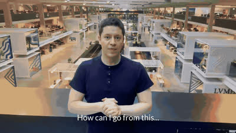
Weta / AWS — VFXアーティスト向けツールを共同開発
WetaとAWSがVFXアーティスト向けのツールを共同開発するというニュース。

Hacking Heightfields — HoudiniのHeightfield応用テクニック
HoudiniのHeightfieldの面白い活用方法を解説するチュートリアル「Hacking Heightfields」。

CG Forge — HoudiniのACES/OCIOセットアップと2026年の使い方指針2本
HoudiniでOCIOを立ち上げるまでを4分で扱うクイックスタートと、2026年に向けてHoudiniで何をやり何をやめるべきかを語る28分の回。

バンクーバー — 2026年VFX業界予測
2026年のバンクーバーVFX業界についての予測記事（LinkedIn）。バンクーバーがロンドン・LAと並ぶ世界トップ3のVFX都市であり、DNEG・ILM・Sonyなど一流スタジオが集中していることなどに触れている。

CGTrader / Turbosquid — 3Dアセットサイトまとめ
汎用アセット・特定アセット・キットバッシュを扱う3Dアセットサイト。CGTraderやTurbosquidなど、テクスチャ・HDRIも扱う汎用サイトが紹介されている。

Home At Last — Blenderでシネマティックなルックを作るチュートリアル
Blenderを使ってシネマティックなルックを再現するチュートリアル「Home At Last」。

V-Ray for Houdini — Displacement適用Tips
V-Ray for Houdiniでのディスプレイスメント適用方法についてのTips。単一のDisplacementならobj階層でマテリアルをアサインし、複数のDisplacement Mapを使う場合はsop階層でPackしてからマテリアルをアサインする、という手順を解説している。

Unreal Engine — PCGで都市を作る全10パートのチュートリアル
Unreal EngineのPCG機能を使って都市を制作するチュートリアル「PCG City」（全10パート）。Epic GamesのSenior Technical Artistが一から解説している。

Julien Calle氏 — EA/Weta出身のSci-fiコンセプトアート講座
EA、Weta、Tencentなどでコンセプトアーティストを務めたJulien Calle氏によるチュートリアル「Sci-fi Concept Art: Create Cinematic Key Frames」。

MEGASTRUCTURE — Vitaly Bulgarov氏によるSci-fi向けKitbashアセット
Vitaly Bulgarov氏によるSci-fi向けキットバッシュアセット「MEGASTRUCTURE」。海外のアーティストに広く使われている印象がある。
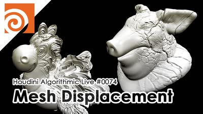
Houdini Algorithmic Live #074 — ディスプレイスメントマップでメッシュを変形する
Junichiro Horikawa氏の週次ライブから、ディスプレイスメントマップを使ってポリゴンメッシュの表面を変形させる回。

ハルクバスター — テクスチャリングチュートリアル
映画キャラクター「ハルクバスター」のテクスチャリングを解説するチュートリアル。

ILM — Generalist部門長によるデモリール・履歴書アドバイスの翻訳
ILMのGeneralist Head of Departmentによる、デモリールと履歴書に関するアドバイス（翻訳）。「一番良い作品を最初に置くこと」など、リール構成についての助言が含まれる。

斎藤晃氏 — Houdini Hive Japan講演『Procedural Hard Surface Design』
斎藤晃氏によるプロシージャルモデリングの講演動画「Procedural Hard Surface Design」（Houdini Hive Japan、Part1・Part2）。

ArtStation — 「いいね」ページを見る学習法
ArtStationで上手いアーティストの「いいね（Likes）」ページを見ることで、探さなくても高品質な作品やTipsに出会えるという学習方法。

Rebelway — Redshiftの海とKarma XPUの東京の街並み解説2本
Redshiftでの海のレンダリングを扱うコースの紹介映像と、SolarisとMaterialXで東京の街並みを構築するDmitry Gromov氏の1時間半の講座。

Houdini — プロシージャルに道路網を作るチュートリアル
Houdiniを使ってプロシージャルに道路網を生成するチュートリアル。

3D Environment MasterClass VOL.3 — ディテールがフォトリアルを作る
pwnisher氏が下水道環境にディテールを足していくライブ配信。継ぎ目のないコンクリートを作るカスタムテクスチャの手法などを扱う約4時間の内容。

Steffen Hampel氏 — 雪景色シーン制作プロセス
Steffen Hampel氏が雪の道路シーンを制作したプロセスを解説した記事「Sunny winter Road scene using V-ray & Nuke」。

80lv — Blenderで作る3Dヨーロッパ都市景観の色彩バリエーション
Blenderで制作されたヨーロッパの都市景観作品のプロセスを解説する80lvの記事。スキャンアセットからパーツごとのアセット制作方法などが学べる。

William Faucher氏 — UE新機能MEGAPLANTS解説動画
William Faucher氏による、Unreal Engineの新ツール「MEGAPLANTS」を解説するYouTubeチュートリアル。

Houdini — 全3パートのInstance解説動画
HoudiniのInstanceに必要な知識を解説する動画（全3パート）。丁寧な説明が特徴。

HDRI入手サイトまとめ
HDRIが入手できるサイトのまとめ。Poly Heaven（無料）、Textures.com（サブスク）、Poliigon（一部無料）、CGEES（無料）、HDRI Skies（一部無料）、MattePaint.com（サブスク）、Greyscalegorilla（サブスク）、HDRMAPS（一部無料）、HDRI Hub（一部無料）、Artstation Marketplace（有料）の10サイトを掲載。

すあま氏 — HoudiniのTipsブログとUSD-Solarisセミナーレポート
すあま氏（@suamaGod）の個人ブログ「すあまの備忘録」。Houdini・USD・Karma・LOPs・Pythonなど、実務で使えるTipsが幅広くまとめられている。同氏が登壇したUSD-Solarisワークフロー実践セミナーのレポート記事（CGWORLD）も公開されている。

Karma — RoomMap機能で部屋を再現するチュートリアル
KarmaのRoomMap機能を使って部屋の中をテクスチャで再現するチュートリアル。

3D Environments: Otherworldly Fantasy Lands — 幻想的な環境を作るコース
幻想的な世界の環境制作を学べるコース「3D Environments: Create Otherworldly Fantasy Lands」。最終レンダリングはClarisseだが、Maya・Houdini・Nukeについても学べる内容。

note — Houdiniで『君の名は。』の1シーンを再現した制作記事
Houdiniを使って映画『君の名は。』のPVの背景をフル3Dで再現した制作過程を解説するnote記事。まだ全部読めていないが、試行錯誤の過程が勉強になるとしている。

Tim van Helsdingen — VFXのフォルダ構成とSolaris/USDプロジェクト解説2本
個人制作のフォルダ構成とバージョン管理を扱う回と、Solaris／USD／Karma XPUで作った作品「Walking in the Woods」のプロジェクト解説の2本。

SideFX公式 — 地形・都市・USD/Solarisを扱うHoudini解説9本
SideFX公式チャンネルから、OSMを使った都市生成や火星地形の制作といった背景系と、Houdini HIVEでのUSD/Solarisパイプライン講演をまとめた9本。

OD Tool — Drag&Dropでアセット管理できるHoudiniプラグイン
Houdini用プラグイン「OD Tool」。Asset LibraryやテクスチャをExplorerからドラッグ＆ドロップできるなど、多くの機能を備えている。

スクウェア・エニックス — Houdini/UE4によるプロシージャル背景制作『1,000の和室』
スクウェア・エニックスによる、Houdini×UE4を使ったプロシージャル背景制作の記事「Procedural Environment『1,000の和室』」。

Junliang Zhang氏 — Houdini/UE4で作るプロシージャル環境制作記事
『Hogwarts Legacy』や『Diablo』に携わったJunliang Zhang氏による、HoudiniとUE4を組み合わせたプロシージャル環境制作の記事。

Arch Masterclass I — V-Rayで環境制作を学ぶチュートリアル
モデリングから全工程をカバーする背景制作チュートリアル「Arch Masterclass I: Mastering Environments with Vray」。

Asset_Ingester — Maya/Arnold用アセットライブラリプラグイン
MayaとArnold向けのアセットライブラリプラグイン「Asset_Ingester」。

Maya / Arnold — Legoブラスターを作るチュートリアル
MayaとArnoldを使ってLegoのブラスターを制作するチュートリアル動画。小規模なアセットを丁寧に作り込む機会は少ないとして紹介している。

Falk Boje氏 — ILM所属アーティストによるSci-Fi環境制作チュートリアル
ILMのAssociate VFX Supervisor、Falk Boje氏による背景制作チュートリアル「How to Create a Sci-Fi Environment in 3ds Max」。作業自体はシンプルながら高品質な結果が得られる。

手島孝人氏 — 元PixarエンジニアによるCEDEC講演スライド『USD入門』
元Pixarのエンジニアである手島孝人氏によるCEDEC講演「ピクサー USD 入門 新たなコンテンツパイプラインを構築する」のスライド。

初心者向け — 背景デザインの練習方法
背景デザインを学び始めた人向けに、Tyler Edlin氏が勧める練習方法を紹介する10分弱の動画。

3Ds Maxを使った無料の背景制作チュートリアル
3ds Max背景制作チュートリアル「Japanese River」制作者による、他の作品。

3ds Max — 背景制作チュートリアル『Japanese River』
3ds Maxを使った背景制作のチュートリアル「Japanese River」。詳細な解説のため、3ds Maxを使っていなくても学べる内容が多いとしている。

Weathering & Grime in Game Environments — 物理法則に基づく汚れ・風化表現の解説動画
ゲーム環境における汚れや風化の表現について解説する動画「Weathering & Grime in Game Environments」。物理法則に基づいたシェーディングを学べる内容。

SpeedTree — 入門チュートリアル『Zero to Hero』
SpeedTreeをゼロから解説するチュートリアル「Speedtree 10 - Zero to Hero」。SpeedTreeのチュートリアルは少ないため貴重だとしている。

The Terrain Domain — 地形スキャンモデル販売サイト
地形の3Dスキャンモデルを購入できるサイト「The Terrain Domain」。Megascansにはないような地形も多く扱っている。

VEX Manager — HoudiniのVEXコーディングを支援するツール
HoudiniでVEXを書く際のサポートツール「VEX Manager」。

Houdini — Alt+Shift+Mでキャッシュマネージャーを開くショートカット
Houdiniで「Alt+Shift+M」を押すとキャッシュマネージャーが開けるというショートカットTips。

Steven Croman氏 — ArtStationに高品質な背景作品多数
Steven Croman氏のArtStationページ。クオリティの高い背景作品が多く掲載されている。

Steven Croman氏 — ILM/Axis Studio出身の3D Matte Paintingチュートリアル
ILMやAxis Studioに在籍していたSteven Croman氏による3D Matte Paintingのチュートリアル。DMP（デジタルマットペイント）のチュートリアルは少ないため貴重だとしている。

【無料】Three D Scans — 彫刻3Dスキャンモデルサイト
彫刻などの3Dモデルを無料で入手できるサイト「Three D Scans」。商用利用の可否は不明だが、自主制作には十分使える。

Whispers of the Forgotten Temple — 制作プロセス解説
作品「Whispers of the Forgotten Temple」の制作プロセスを解説したブレイクダウン。Houdiniが様々な箇所で使用されている。

USDワークフローのデモ映像
USDを使ったワークフローを見せるデモ映像。7分弱の短い内容。

HoudiniのVEX学習におすすめなHorikawa氏のYouTube
HoudiniのVEXを学びたい人向けに、Junichiro Horikawa氏のYouTubeチャンネル。
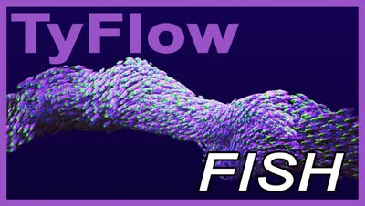
3ds Max × tyFlow — 魚群シミュレーションのステップ解説
3ds MaxとtyFlowを使って魚の群れをシミュレーションする手順を、ステップごとに追う5分のチュートリアル。

【無料】Wire Wheels Club — 高品質な車アセットサイト
無料で使える高品質な車の3Dアセットを提供するサイト「Wire Wheels Club」。

ILM - GeneralistのYen ChenのArtStation
Yen Chen氏のArtStationページ。クオリティの高い背景作品が多く掲載されている。

ILM - GeneralistのYen Chen氏のScatter用HDA「CH Tools」
ILMのGeneralist、Yen Chen氏が自身の作品制作に使用したHDA「CH Tools」を無料公開していること。Scatterに重要な機能が多く含まれている。

How not to suck at Python — Houdini Pythonチュートリアル
HoudiniでのPythonの使い方を学べるチュートリアル動画「How not to suck at Python」。制作を効率化するスクリプトを自分で書けるようになったと、自身の学習体験にも触れている。

Ivy Taming — Adrien Lambert氏による使い方解説動画
Ivy Tamingプラグインの使い方を、Adrien Lambert氏が丁寧に解説した動画。

Ivy Taming 1.1 — HoudiniのツタHDA、The Last of Usでも使用
HoudiniでIvy（ツタ）を生成できるHDA「Ivy Taming 1.1」。『The Last of Us』などハリウッドのプロダクションでも使用されている。

LOPs for Solo Artists — 個人制作向けSolarisチュートリアル
個人制作でSolarisを使いたい人向けのチュートリアル「LOPs for Solo Artists」。

AL MASKBUILDER — Adrien Lambert氏によるマスク生成HDA
Adrien Lambert氏による、マスクを作成できるHoudini用HDA「AL MASKBUILDER」。ScatterやShadingで使えるマスク作成機能が詰まっている。

Substance Painter — 靴・カメレオンのテクスチャリングチュートリアルも紹介
靴やカメレオンなどをテーマにしたテクスチャリングのチュートリアル。Substance Painterの使い方が参考になり、背景制作にも活かせるとしている。

An Even Longer-Winded Guide — HoudiniのInstancing体系的理解に役立つ記事
HoudiniのInstanceについて体系的に理解するのに役立った記事「An Even Longer-Winded Guide to Instancing in Houdini」。

CG Cinematography — ライティング技法解説記事『Lighting Techniques』
CG Cinematographyのウェブサイトに掲載されているライティング技法の記事。主にCGアニメーション作品を扱っているが、様々なテクニックが紹介されている。

今川雅史氏 — 都市背景制作チュートリアル『Modern City』
今川雅史氏による都市の背景制作チュートリアル「Cinematic Shot Design | Modern city」。カメラシェイクを加える方法にも触れられている。

KTT for Houdini — Samuel A Krug氏による地形生成HDA
Samuel A Krug氏による地形生成HDA「KTT for Houdini」。従来のHoudiniやGaeaでは難しい表現が可能になるとしている。

Houdini — Forループでコピーしたジオメトリの交差を避ける
Forループでポイントにジオメトリをコピーする際、既に置いたものと交差する配置を弾いて重なりを防ぐHoudiniの手法解説。

Anthony Eftekhari氏 — 3D Matte Paintingチュートリアル
Anthony Eftekhari氏による3D Matte Paintingのチュートリアル。主にMaya、3ds Max、Photoshopを使用する。

【無料】ActionVFX — カメラシェイク素材を提供
ActionVFXが提供する無料のカメラシェイク素材。Nukeでトラッキングすることでリアルなカメラシェイクを再現できる。

【無料】Image Colorspace Converter — カラースペース変換アプリ
カラースペースを変換できる無料のWindows向けアプリケーション「Image Colorspace Converter」。

Lattice_B — HoudiniのLattice操作を簡単にするHDA
HoudiniでのLattice操作を簡単にするHDA「Lattice_B for Houdini」。

【無料】Anthony Eftekhari氏 — Blizzard所属アートディレクターの構図・デザイン講座
Blizzard EntertainmentのSenior Art Director、Anthony Eftekhari氏による構図とデザインについての無料チュートリアル「Composition & Staging Series」。

Solaris — 単一/複数ショット対応のライティングテンプレート
Houdini Solaris向けのライティングテンプレート。単一ショット用だけでなく複数ショット用のテンプレートもある。

YL Atlas Cutter — OpacityMapでメッシュをカットアウトするHoudiniプラグイン
OpacityMapを使ってメッシュをカットアウトできるプラグイン「YL Atlas Cutter」。

Megascans — USD変換・LookDevまで行えるHoudini用HDAツール
MegascansのアセットをUSDに変換し、LookDevまで行えるHoudini用のHDAツール。

Houdini — ノード解析を支援するAIアシスタントを紹介
HoudiniのAIアシスタント（LinkedInで紹介）。デバッグやノード・パラメーターの分析を行ってくれる。

安藤恵美氏 — Houdini/SolarisでのUSD入門講演
安藤恵美氏によるUSD/Solarisについての講演動画。2018年のものだが、USDの基本概念の理解が深まる内容。
Varomix Trix — HoudiniのTipsとアセットブラウザ自作の解説4本
Varomix Trixシリーズから、ノードの見た目のカスタマイズ、USDプラグインのビルド、Pythonによるアセットブラウザ／アイコンブラウザ自作を扱う4本。

Lazy Tutorials — Ian Hubert氏が1分で都市を組み上げるBlender講座
Ian Hubert氏の「Lazy Tutorials」シリーズから、Blenderで都市を組み上げる回。1分強で手順だけを一気に見せる構成。

Yen Chen氏 — ILMロンドン所属アーティストの作品制作プロセス
ILMロンドン所属のGeneralist、Yen Chen氏による作品の制作プロセス。使用ソフトはHoudini、Nuke、および（現在は使用できない）Clarisse。

80lv — 『The Witcher 3』着想の雪景色シーン制作解説
80lvに掲載された、『The Witcher 3』に着想を得た雪景色シーンの制作記事。大規模な自然系背景制作に役立つTipsがまとめられており、使用ソフトはUnreal Engineがメイン。

Steffen Hampel氏 — Wingfoxで学ぶ『Japanese Alley』制作チュートリアル
Steffen Hampel氏による、「Japanese Alley」という作品を制作するWingfoxのチュートリアル。MayaとV-Rayがメインに使用されている。

Andrew Hodgson氏 — Blizzard所属アーティストによるUV展開の実演
Blizzard Entertainment所属で映画『Dune』にも参加したAndrew Hodgson氏による、UV展開の実演。過去に多田学氏のセミナーでも参考ポートフォリオとして紹介されていた。

SpeedTree — HoudiniでSpeedtreeのアニメーション・シミュレーションプラグイン
SpeedTreeでアニメーションやシミュレーションを行えるプラグイン。

Megascans — Atlas機能で葉を作る手法、『アサシンクリード』でも使用
HoudiniでMegascansのAtlas機能を使って葉っぱのアセットを作成する手法。この手法はゲーム『アサシンクリード』でも使用されている。Megascansは葉っぱ系アセットの種類が少ないため、こうしたテクニックが役立つとしている。

Blender / RealityScan / UE5 / Nuke — 複数ソフトで作る背景制作チュートリアル
Blender、RealityScan、UE5、Nukeを使ったシーン制作のチュートリアル。Houdiniとは異なるワークフローだが、背景制作に通じる部分が多いとしている。

Baptiste氏 — 背景制作作品のBlenderファイルを紹介
背景制作に定評のあるBaptiste氏が制作した作品のBlenderファイル。

【無料】Blender — WIP版の自動リグ生成アドオン
自動的にリグを作成してくれるBlenderのアドオン。まだWIP段階だが、無料でダウンロード可能。

Antoine Barbannaud氏 — The Rookies 2024優勝者による背景制作チュートリアル
The Rookies 2024優勝者であるAntoine Barbannaud氏によるチュートリアル。複数のソフトを組み合わせた高品質な内容で、背景制作のワークフロー学習におすすめとしている。

Megascans × Octane × Cinema 4D — 受賞作品「Mighty」の制作解説
Alexander Maltsev氏が受賞作「Mighty」をMegascansとCinema 4Dで作り、Octaneでレンダリング、Fusionで合成するまでを10パートで解説した40分の講座。

Houdini — COPsで斧のテクスチャを作るチュートリアル動画
HoudiniのCOPsを使ったテクスチャリングのチュートリアル動画。1時間の動画で斧のテクスチャ制作を解説している。

Lucas Piazzini氏 — ILM Junior GeneralistのArtstation
ILMのJunior GeneralistであるLucas Piazzini氏のXアカウント。ArtStationでの詳しい背景制作解説に加え、コンテスト「Rampage Rally」で3位に入賞した作品も紹介されている。

Double Jump Academy — William氏によるHoudini背景制作講座2本
Double Jump Academyで公開されている、William氏によるHoudiniを使った背景制作のチュートリアル「Epic Environments」と「Environments for Beginners」。

William Fiorentini氏 — ILM Generalistによる背景制作チュートリアル
ILMのGeneralist William Fiorentini氏によるチュートリアル。背景制作のTipsが詰まっており、fogアセットも付属する。

cgwiki — LOPsとSolarisを詳しく解説する記事
HoudiniのLOPsとSolarisについて詳しくまとめられた英語記事（cgwiki）。

80lv / James Hodgart氏 — Rebelwayの環境制作コース講師を紹介
80lvに掲載された記事と、RebelwayでEnvironment Creation in Houdiniコースを担当するJames Hodgart氏。

80lv — 映画『The Creator』着想の地形デザイン解説
映画『The Creator』に着想を得たシーンの地形デザインについて解説する80lvの記事。

80lv — Megascansで作るフォトリアルな3Dシーン制作記事
Megascansを使ってフォトリアルな3Dシーンを制作する手法を解説した80lvの記事。

80lv — Houdiniで作る穏やかな漁村シーンの環境アート解説
Houdiniを使った環境アート制作について、穏やかな漁村シーンのセットアップを例に解説する80lvの記事。

80lv — Houdini/Nukeで2D環境を3D再現する手法を解説
大規模な2D環境をHoudiniとNukeを使って3Dで再現する手法を解説した80lvの記事。

80lv — Houdiniを使った背景制作ワークフロー解説記事
80lvに掲載された、Houdiniを使った背景制作ワークフローの記事。地形生成から建物配置、USDでのコンポジションまで解説されている。

KR_ForestPack — 背景制作向けのHoudini Scatterツールを公開
背景制作に欠かせないScatterツール。木川氏の記事を基に、いくつか機能を追加して作成した。詳細はNotionページにまとめられている。

マットペイントによるセットエクステンションの基礎
ウェブ上の写真素材を使って、実写の背景を作り替えるマットペイントのセットエクステンションを解説した33分のチュートリアル。

Houdini — 斜度コストで山道を通し、地形側を変形させるセットアップ
斜度をコストとして扱いながらパスを求め、その道路ジオメトリで地形自体を変形させるHoudiniのセットアップデモ。hipファイルも配布されている。